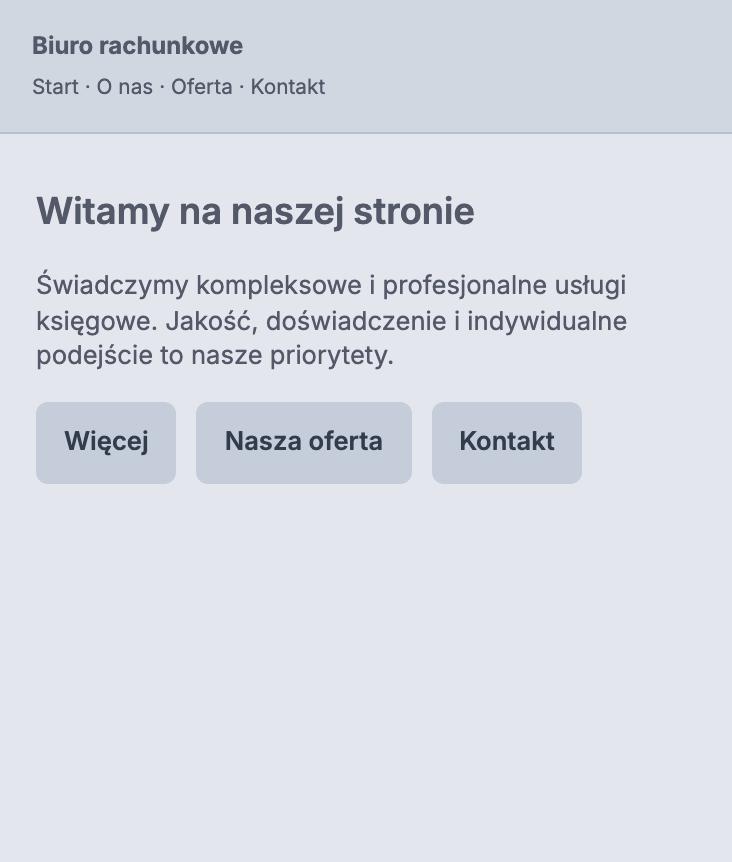
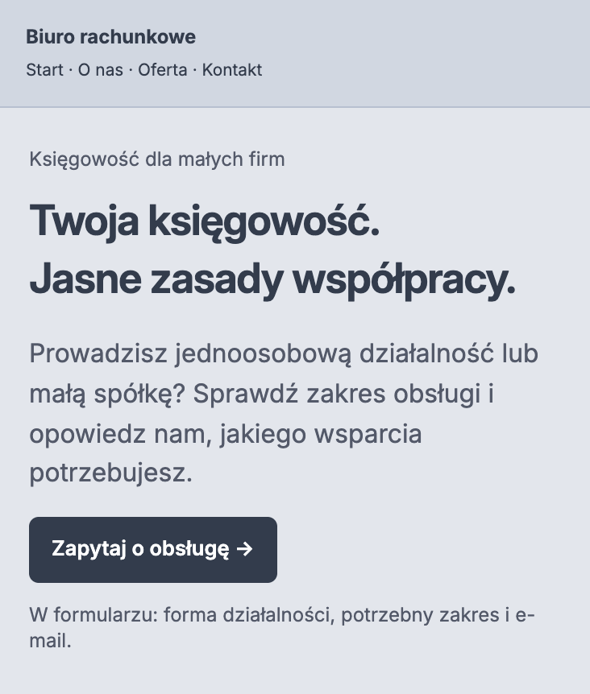

Jasność przekazu
Czy użytkownik w kilka sekund rozumie, czym zajmuje się firma i dla kogo jest oferta?
Audyt komunikacji
Otrzymasz analizę komunikacji, listę problemów i rekomendacje omówione podczas konsultacji.
Zakres audytu
Czy w kilka sekund widać, czym zajmuje się firma i dla kogo jest oferta?
Czy strona odpowiada na obawy i daje powód, by wybrać właśnie Ciebie?
Czy po przeczytaniu oferty wiadomo, jaki krok wykonać?
Nawet dopracowany wygląd strony nie pomoże, jeśli odbiorca nie rozumie, co ją wyróżnia i jak się skontaktować.
Zakres audytu
Czy użytkownik w kilka sekund rozumie, czym zajmuje się firma i dla kogo jest oferta?
Czy strona odpowiada na obawy klienta i daje mu powody, żeby przejść dalej?
Czy użytkownik wie, jaki krok powinien wykonać po przeczytaniu strony?
Jak wygląda audyt
Sprawdzamy drogę od pierwszego wrażenia do kontaktu.
Wskazujemy, gdzie przekaz jest niejasny lub zbyt ogólny.
Pokazujemy, co zmienić w treści, układzie i wezwaniach do działania.
Oddzielamy szybkie poprawki od większej przebudowy.
Możemy wdrożyć zmiany albo zaprojektować stronę od nowa.
Jak wygląda audyt
Przechodzimy przez stronę od pierwszego wrażenia do formularza kontaktowego.
Wskazujemy miejsca, w których komunikacja jest niejasna lub zbyt ogólna.
Pokazujemy, co warto zmienić w treści, strukturze i CTA.
Oddzielamy szybkie poprawki od zmian, które wymagają większej przebudowy.
Możemy pomóc wdrożyć zmiany albo zaprojektować stronę od nowa.
Od diagnozy do konkretnej zmiany
Strona biura rachunkowego ma pomóc małej firmie zrozumieć zakres obsługi i wysłać zapytanie. Ogólny nagłówek, zbity tekst i trzy równorzędne przyciski utrudniają decyzję.

Przykład fikcyjnego biura rachunkowego
Nagłówek wskazuje odbiorcę, krótszy opis ułatwia czytanie, a przycisk „Zapytaj o obsługę” prowadzi do formularza. Nazwa i styl marki pozostają te same.

Wskaż, jakie firmy i formy działalności obsługujesz. Pokaż zakres i zasady współpracy.
Zacznij od 16–18 px, interlinii ok. 1,5 i wierszy po 55–70 znaków. Sprawdź kontrast na telefonie.
Wyróżnij przycisk. Zadbaj o pole 44 × 44 px, odstępy i stany formularza.
Pokaż zakres, dowody zaufania i proces. Skróć formularz i potwierdź wysłanie.
Dodaj obok oferty opinię klienta lub przykład podobnej współpracy.
Wyjaśnij, od czego zależy cena i co klient powinien podać do wyceny.
Od diagnozy do konkretnej zmiany
Audyt wskazuje, co utrudnia zrozumienie oferty i jak poprawić treść, typografię, interfejs i drogę do kontaktu w obecnym stylu marki.
Fikcyjny przykład. Cel to pomóc małej firmie zrozumieć usługi księgowe i wysłać zapytanie. W obu wersjach zachowano nazwę, kolory i styl marki.
Witamy na naszej stronie
Świadczymy kompleksowe i profesjonalne usługi księgowe. Jakość, doświadczenie i indywidualne podejście to nasze priorytety.
Ogólny nagłówek, zbity tekst i trzy równorzędne przyciski. Klient musi sam znaleźć informacje potrzebne do decyzji.
Księgowość dla małych firm
Twoja księgowość.
Jasne zasady współpracy.
Prowadzisz jednoosobową działalność lub małą spółkę? Sprawdź zakres obsługi i opowiedz nam, jakiego wsparcia potrzebujesz.
W formularzu: forma działalności, potrzebny zakres i e-mail.
Kolory i tożsamość firmy pozostają te same. Nagłówek wskazuje odbiorcę, tekst łatwiej przeskanować, a jeden główny przycisk prowadzi do formularza.
Przykładowy raport
Klient może ocenić, czy oferta pasuje do jego sytuacji.
Diagnoza: „Witamy na naszej stronie” nie wyjaśnia, komu firma pomaga.
Zmiana: wskazać małe firmy i rodzaje obsługiwanej działalności. Pod nagłówkiem opisać zakres wsparcia, a dalej zasady rozpoczęcia współpracy.
Najważniejsze informacje są łatwiejsze do znalezienia i przeczytania.
Diagnoza: drobny tekst i podobna wielkość tytułów zacierają hierarchię informacji.
Zmiana: zacząć od tekstu 16–18 px, interlinii około 1,5 i szerokości akapitu 55–70 znaków. Rozróżnić nagłówek główny, tytuły sekcji i opisy; sprawdzić kontrast oraz łamanie tekstu na telefonie.
Wiadomo, co można kliknąć i który krok jest najważniejszy.
Diagnoza: trzy podobne przyciski konkurują o uwagę; odstępy nie porządkują treści.
Zmiana: wyróżnić „Zapytaj o obsługę” w istniejącej palecie marki, ujednolicić przyciski i odstępy. Na telefonie zapewnić wygodne pola dotykowe, np. 44 × 44 px, oraz czytelne stany fokusu, błędu i wysyłania.
Klient wie, o co pyta i co wydarzy się po zostawieniu kontaktu.
Diagnoza: klient musi szukać kontaktu, zanim pozna zakres i sposób współpracy.
Zmiana: uporządkować stronę: dla kogo → zakres → dowody zaufania → proces → kontakt. Ograniczyć wymagane pola do potrzebnych na start i pokazać potwierdzenie po wysłaniu.
Odbiorca widzi, jak biuro pomaga firmom w podobnej sytuacji.
Diagnoza: zapewnienia o jakości i doświadczeniu są ogólne.
Zmiana: dodaj obok oferty przykład obsługi firmy z opisem jej potrzeb i zakresu pomocy. Jeśli masz zgodę klienta, możesz też przytoczyć jego opinię.
Klient wie, czego się spodziewać i z czym zgłosić się do biura.
Diagnoza: klient nie wie, co obejmuje obsługa ani jakie informacje są potrzebne do wyceny.
Zmiana: opisz zakres podstawowej obsługi i podaj czynniki wpływające na cenę, np. formę działalności, liczbę dokumentów i obsługę pracowników.
To przykładowe kierunki zmian. Konkretne parametry, priorytety i zakres rekomendacji dobieramy do Twojej strony.
Cena audytu
Analiza strony głównej, ocena komunikacji i struktury, lista problemów, rekomendacje i konsultacja.
Sprawdź, czy Twoja strona pomaga klientom zrozumieć wartość Twojej firmy.
Zamów audyt komunikacjiCena
499 zł brutto
Jeśli nie wiesz, gdzie leży problem, audyt pomoże ocenić stronę, komunikację i ofertę.
Zacznijmy od diagnozy
Zamów audyt komunikacji i sprawdź, czy Twoja strona naprawdę pomaga odbiorcy zrozumieć wartość Twojej firmy.
Zamów audyt komunikacji